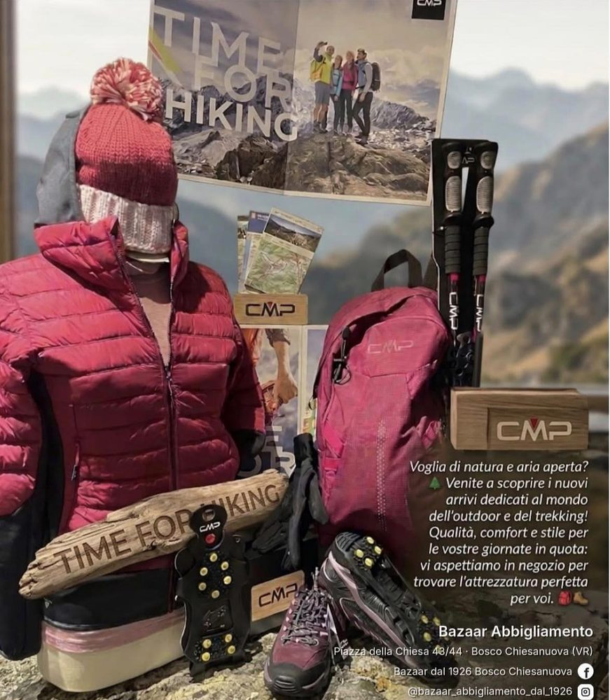

Outdoor e trekking · CMP
Time for hiking
Voglia di natura e aria aperta? Venite a scoprire i nuovi arrivi dedicati al mondo dell'outdoor e del trekking. Qualità, comfort e stile per le vostre giornate in quota.
Vedi l'outdoor